Recently there has been interest in some new variables describing the solutions to the Navier-Stokes and Euler equations. These variables go under various names, for example, the magnetization variables, impulse variables, velicity or Kuzmin-Oseledets variables.
Let us start by considering the incompressible Euler equations in the entire
three-dimensional space, that is,
The question of global existence of even only weak solutions to system (1.1) is an open question and only the existence of either measure-valued solutions (see [3]) or dissipative solutions (see [7]) is known. Nevertheless, a common approach to try to prove the global existence of smooth solutions is to use local existence results, and thus reduce the problem to proving a priori estimates. So we will assume that we have a smooth solution to the equations.
In that case, we can rewrite the Euler equations as the following system
of equations (see for example [1]):
The advantage of the magnetization variable is that it is local in that
its support never gets larger, it is simply pushed around by the flow.
It is only at the end, after one has calculated the final value of
, that one needs to take the Leray projection to compute
the velocity field  .
.
Indeed one very explicit way to write according to
equation (1.3) is to set
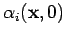
equal to the  th unit vector, and
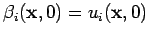,
for
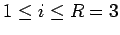. In that case
let us denote
th unit vector, and
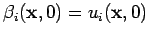,
for
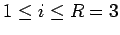. In that case
let us denote
 and
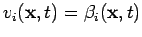. In that case we see that
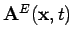 is actually the
back to coordinates map, that is, it denotes the initial position of the
particle of fluid that is at 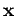 at time
and
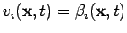. In that case we see that
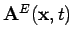 is actually the
back to coordinates map, that is, it denotes the initial position of the
particle of fluid that is at 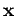 at time  (see for example [1]).
Furthermore
in the case that
, we see that
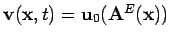.
Furthermore, it is well known if
(see for example [1]).
Furthermore
in the case that
, we see that
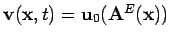.
Furthermore, it is well known if  is smooth, that
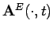 is smoothly invertible, and that the determinant of the
Jacobian of 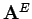 is identically equal to
is smooth, that
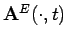 is smoothly invertible, and that the determinant of the
Jacobian of 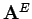 is identically equal to  (because
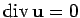).
Hence the matrix
(because
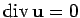).
Hence the matrix  exists. For definiteness, we
write the explicit equation for
:
exists. For definiteness, we
write the explicit equation for
:
The desire, then, is to try to extend this notion to the Navier-Stokes
equations
Again, these can be rewritten into the magnetic variables formulation
as follows:
Another approach was developed by Peter Constantin (see [2]). He
used new quantities  and
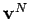 obeying the following equations.
Let us represent
and
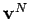 obeying the following equations.
Let us represent  in a form similar to
(1.2)
in a form similar to
(1.2)
The purpose of this note is to show that indeed global smooth solutions do not exist. As Peter Constantin pointed out to us, this does not invalidate his method, but it does mean that to make his method work for a large time period that one has to break that interval into shorter pieces, and apply the method to each small interval.
The main result is summarized in the following theorem.